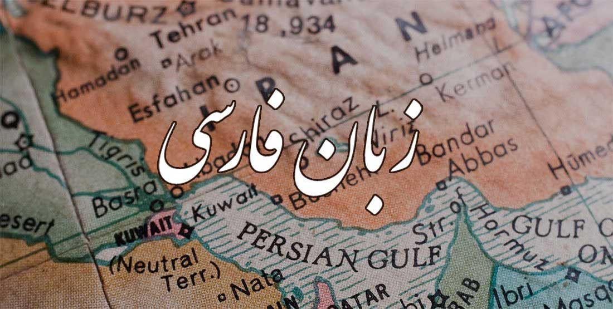

Welcome to the
Persian language.
Persian (also called Farsi) is a rich, poetic language spoken by tens of millions of people in Iran, Afghanistan and Tajikistan. This site is a dedicated place to begin in studying the language: learn the letters, read real sentences, rebuild them word by word, and hear how people actually talk.


The language at a glance
32
letters in the alphabet
←
written right to left
2
styles: written and spoken
What you'll find here
| ALPHABET | All 32 letters with their names and sounds, plus a quiz mode to test yourself. |
| READ | One sentence at a time, with pronunciation and English you can switch on or off. |
| SCRAMBLE | A word-order puzzle that shows how Persian sentences are put together. |
| COLLOQUIAL | How Persian is really spoken in everyday conversation, compared with the formal form. |
Vocabulary and grammar lessons are on the way.